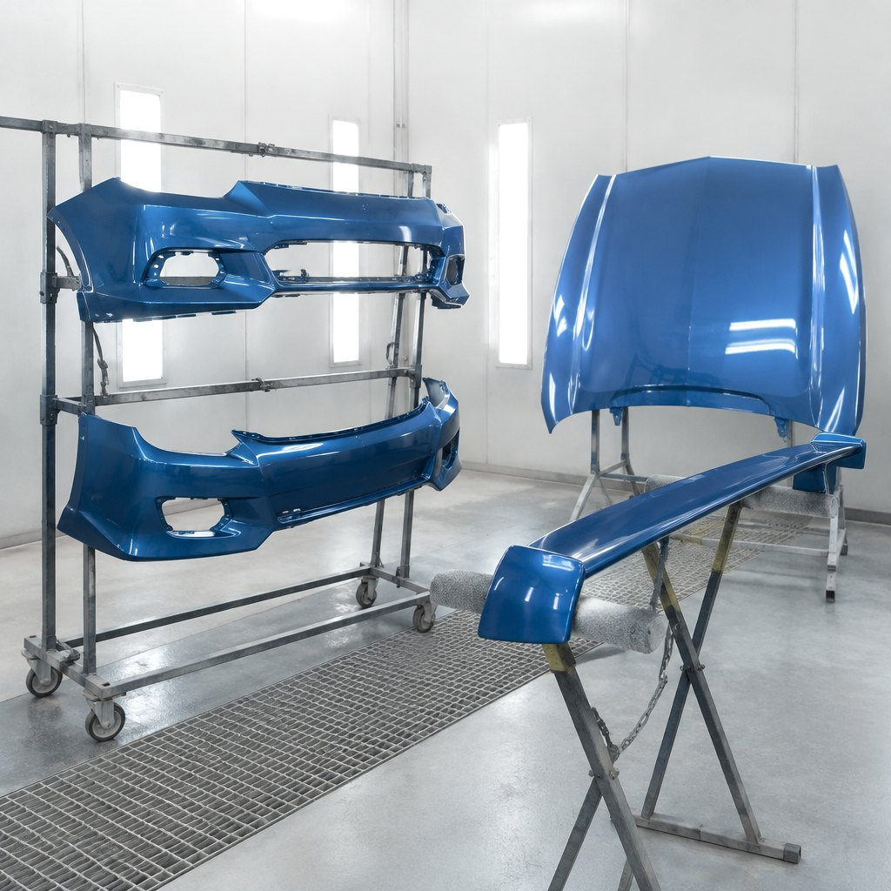
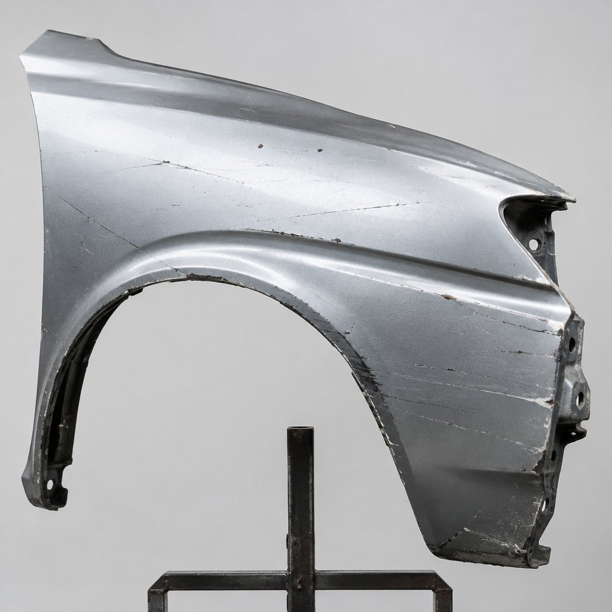
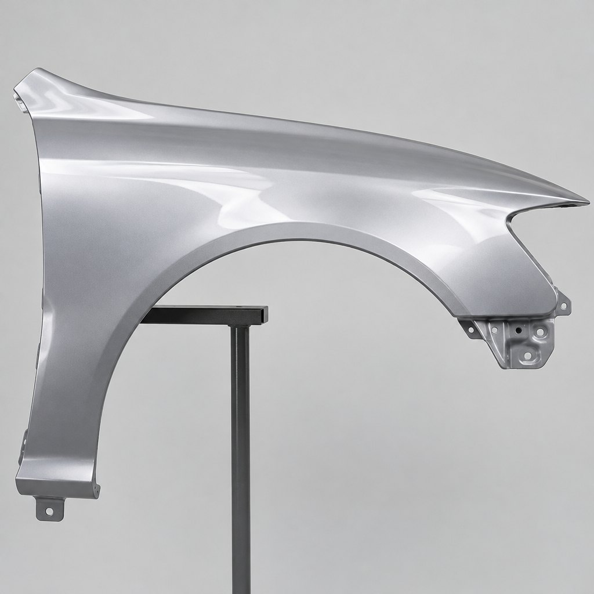
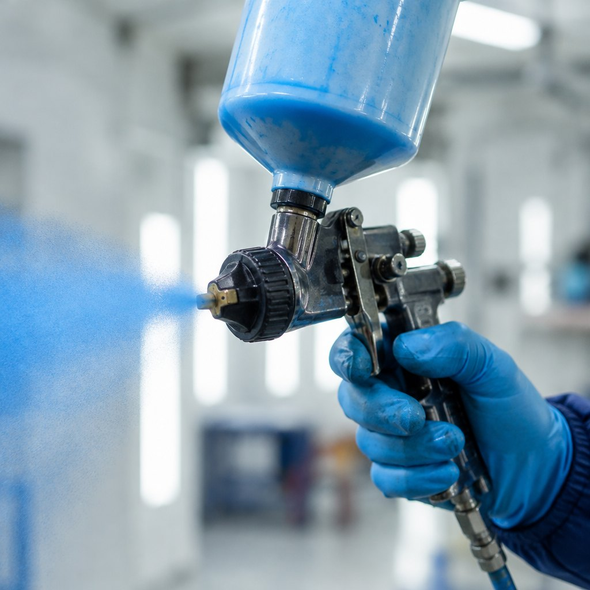

Покраска деталей, а не всей машины
Ремонт бампера, подготовка и окрас снятых элементов кузова: привозите деталь — забираете готовую к установке. Подбор цвета по коду и по образцу, сушка в камере, гарантия на окрас.
Что делаем
Работаем с отдельными элементами: так дешевле полного окраса, а результат не зависит от состояния остального кузова.
Окрас одного элемента
Бампер, крыло, капот, дверь, крышка багажника — в цвет кузова, с подготовкой и сушкой в камере.
Окрас комплекта
Несколько элементов сразу: один цвет, одна партия краски, одинаковый оттенок на всех деталях.
Ремонт бампера
Трещины, сколы, разрывы креплений: ремонтируем пластик, готовим и красим.
Подготовка к покраске
Мойка, разбор, шпатлёвка, грунт, шлифовка, обезжиривание — то, что определяет, как ляжет лак.
Подбор цвета
По коду краски, по VIN или по образцу: учитываем выгорание и разницу партий.
Покраска после ремонта
Элемент после рихтовки или сварки: выравниваем, грунтуем и красим.
Потяните ползунок
Один и тот же элемент: слева — до, справа — после окраса. Это иллюстрация подхода, а не обещание «как новое» для любого повреждения.


Паспорт элемента
Выберите деталь: покажем ориентировочную площадь окраса, срок и что входит в работу. Цифры уточняем после осмотра.
Почему снятый элемент
Красим элемент отдельно от машины: нет риска пыли с колёс и арок, границы окраса видны по кромкам, а сушка идёт в камере при стабильной температуре. Владелец привозит только деталь.
Почему окрас снятого элемента
Это не компромисс, а более чистый способ: деталь отдельно от машины проще подготовить и проконтролировать.
Нет пыли с машины
Элемент красится отдельно: грязь с арок и колёс не попадает на свежий лак.
Границы по кромкам
Окрас идёт до технологических кромок, без «пятна» посреди соседней детали.
Цвет под контролем
Снятую деталь удобно сравнить с образцом и выровнять оттенок до сушки.
Дешевле полного окраса
Платите за конкретный элемент, а не за весь кузов.
Как выглядит цех
Камера, сушка, стеллаж с готовыми деталями и стол подбора цвета.



Частые вопросы
Если не нашли свой случай — позвоните, ответим по вашей детали.
Можно, но на машине сложнее подготовить кромки и выше риск пыли. Мы специализируемся на окрасе снятых элементов — результат стабильнее.
Обычно 1–2 дня на элемент, включая подготовку и сушку. По комплекту и по сложным повреждениям срок скажем при осмотре.
Подбираем по коду краски, по VIN или по образцу с детали. Учитываем выгорание: у старых автомобилей цвет «по коду» отличается от фактического.
На окрас даём гарантию. Она не действует при повторном ударе, самостоятельной полировке абразивом или нарушении правил эксплуатации.
Да: бамперы, накладки, решётки, зеркала. Пластик требует отдельного грунта и эластичной добавки в лак.
Привозите элемент — посчитаем на месте
Назовите автомобиль, деталь и состояние: подскажем, ремонт или сразу окрас, и сколько это займёт.